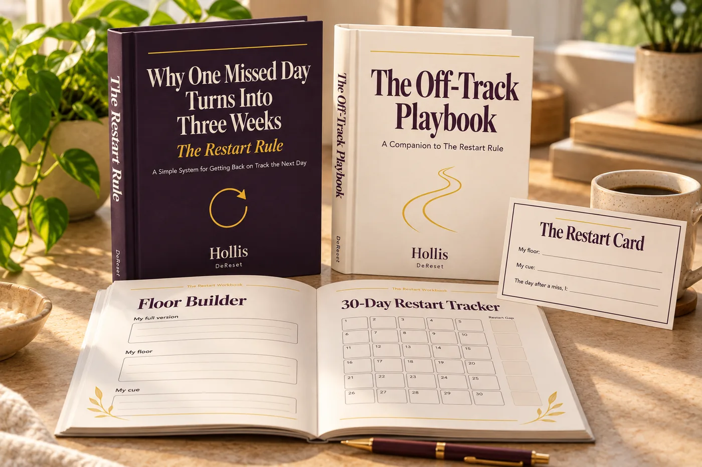
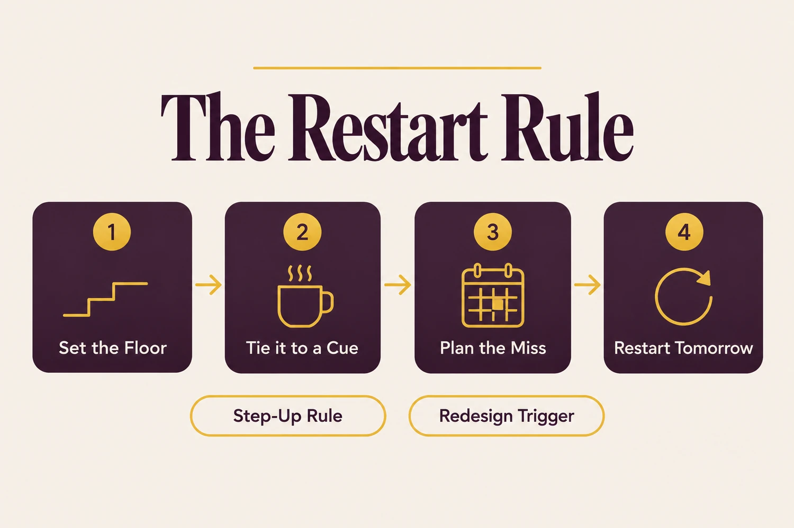
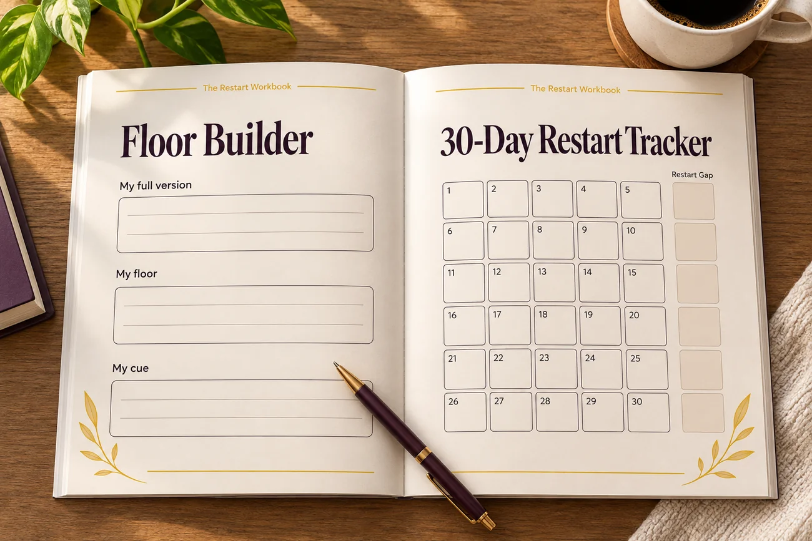
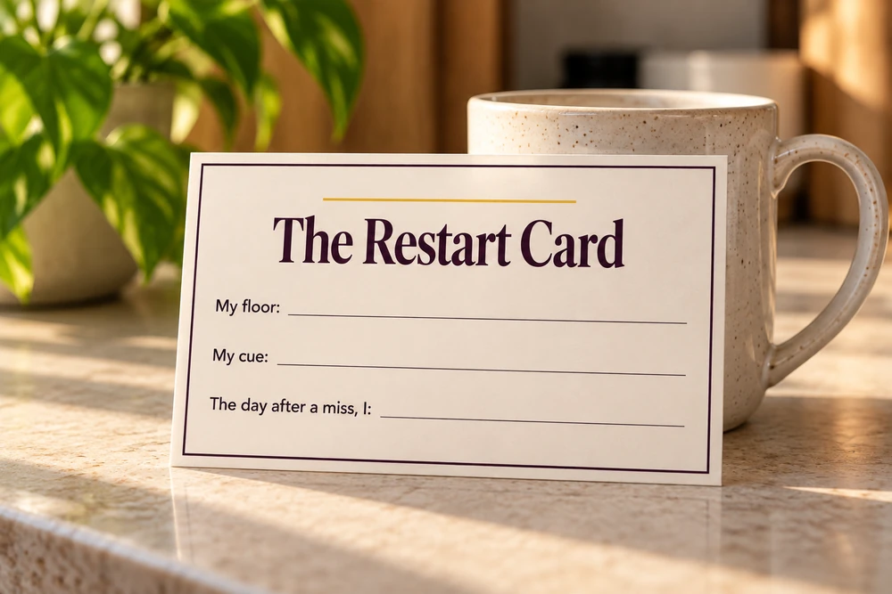
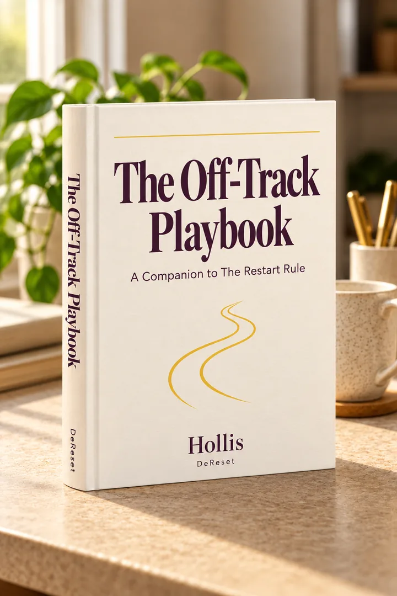

The Restart Rule
Your Files Are Ready
Thanks for picking this up. Everything you bought is below, along with the one small thing to do first.

You didn't buy another plan for the perfect week. You bought a plan for the day after a bad one.
That's the part most routines leave out, and it's usually where the start-over cycle begins. Everything below is built around that one moment: what you'll do the morning after a miss, so a missed day stays one day.
You don't need to read it all tonight, and you definitely don't need to wait for Monday. The first step takes a few minutes, and you can do it today.

Your downloads
Your Files
All your files are waiting in your Gumroad Library, including a spreadsheet version of the Tracker if you'd rather track on screen. Each button below takes you there.

The Restart Workbook
The Follow-Through Audit, the Floor Builder and the 30-Day Restart Tracker.

The Restart Card
Your Miss Plan on one page, for the day after a miss.

The Off-Track Playbook BONUS
The disrupted week, the long lapse, the all-or-nothing spiral, and adding a second commitment.
Save all your files to your phone or computer now, before you do anything else.
Your files stay in your Gumroad Library, so you can download them again anytime. Gumroad also emails a receipt to the address you used at checkout, with a link back to your files.
Your first few days
Start Here
Here's the order to work in. It's the same path laid out on the Start Here page of the guide.
Today or tomorrow: the Follow-Through Audit
Read the opening chapters of the guide, then open the workbook to the Follow-Through Audit. Look back at the last few things you started and dropped, and mark where and how each one slipped. It turns a vague "I always quit" into something specific you can work with.
Aim to finish the Audit within your first 48 hours.
Days 2 to 3: build your floor and fill in your Card
Read Set the Floor, Tie it to a Cue and Plan the Miss. Use the Floor Builder to write your full version, your floor and your cue, one sentence each. Then fill in your Restart Card (your floor, your cue, and what you'll do the day after a miss) and put it somewhere you'll see it every morning.
The next 30 days: count restarts, not streaks
Use the 30-Day Restart Tracker. When you miss a day, restart the next one and note your Restart Gap. Once a week, take five minutes for the weekly review. It tells you when to step up and when to change the setup.
When life knocks you off track
Open the matching section of The Off-Track Playbook. Each one shows you how to adjust your Card for that situation and what to note in your Tracker.
A note from Hollis
Need help?
A download problem or a question? Email support@dereset.com. Every email is read by a real person.
And if the Restart Rule doesn't help you break the start-over cycle, email the same address within 30 days and you'll get every cent back. No hoops.
From DeReset
More Practical Resets
DeReset publishes focused guides for everyday resets. Clear steps. No theatre.
Explore the collection at dereset.com